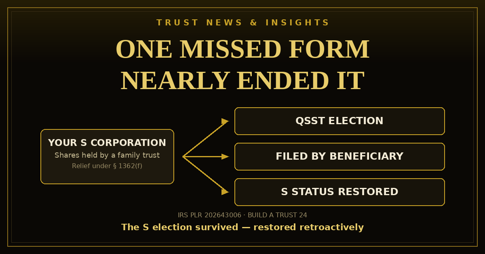

A family trust held the company's stock, the founder died, and two beneficiaries never filed one election. The S election terminated on the spot — and in PLR 202643006, released October 23, 2026, the IRS restored it. Here are the trust-as-shareholder rules that decide whether your company keeps its S status.

The company — call it X — was an S corporation whose shares sat inside a family trust. While the trust's owner, A, was alive, that arrangement was squarely legal: a trust treated as owned by one individual under the grantor trust rules is an eligible S corporation shareholder. Then A died. Under the trust agreement, the trust split into separate shares for two beneficiaries, B and C — and a two-year clock started. A trust of that kind stays an eligible shareholder for only two years after the deemed owner's death.
The shares themselves were fine. Each separate share met every requirement of a qualified subchapter S trust (QSST): one income beneficiary, all income required to go out currently to that beneficiary, no corpus to anyone else during the beneficiary's life. What was missing was a signature. A QSST counts only if the beneficiary elects it — and B and C never filed their QSST elections. The day the two-year window closed, the trust became an ineligible shareholder, and X's S election terminated, automatically, on that date.
What saved the company was its paper trail. X and every shareholder had filed all of their returns consistently as if the S election were still in effect, and B and C had reported the trust's share of the company income on their own returns exactly as QSST beneficiaries are supposed to. The termination, in other words, was a paperwork failure sitting on top of a business that had done everything else right.
Yes — can a trust own an S corporation is one of the most common questions in this lane, and the answer is yes, but only certain trusts, on certain conditions. An S corporation may have only eligible shareholders (§ 1361(b)); the wrong shareholder terminates the election. For trusts, § 1361(c)(2) and its neighbors allow:
Every other trust — an ordinary irrevocable trust for the kids, a spendthrift trust, most trusts in a typical estate plan — is an ineligible shareholder. Put S corporation stock into one without a QSST or ESBT election in place and the election dies the day the transfer closes.
A QSST is a trust (or a substantially separate share of one — the tax law treats separate shares as separate trusts for this purpose, under § 663(c)) whose terms guarantee a single current income beneficiary: during that beneficiary's life there is only one income beneficiary, all of the trust's income must be distributed — or be required to be distributed — currently to them, any principal paid out goes only to them, and if the trust ends during their life, everything goes to them.
The election itself is the part families miss, and PLR 202643006 is the proof. Under § 1361(d)(2), the income beneficiary — not the trustee, not the company — makes the QSST election, signing and filing it with the IRS service center where the corporation files its return, separately for each corporation whose stock the trust holds. Its filing window is short and runs from when the trust or share first holds the stock. There is no election floating in the background waiting to be discovered: until the beneficiary files, there is no QSST.
The IRS concluded the S election did terminate on the day the two-year window closed — it did not pretend otherwise — and then forgave the termination:
Putting company shares into a trust is exactly what this site teaches in its Trust Funds & Businesses material — and this ruling is the caution label for that move. The transfer is the easy part. The election calendar is the part that kills: a grantor's death starts a two-year countdown, the QSST election belongs to the beneficiary, and nobody's software sends a reminder. If your trust holds S corporation stock — or is about to — the questions to answer in writing are: which eligible-shareholder category is this trust in, who owes which election, and by what date?
Plan the structure before you form it in the Trust Fund Playground, and draft the trust itself in the Trust Builder, where the business-interest paperwork (Schedule A assignments and beneficiary designations) is part of the package.
A private letter ruling is the IRS's answer to one taxpayer about one set of facts. Under § 6110(k)(3), PLR 202643006 binds only the taxpayer who requested it and may not be used or cited as precedent. Inadvertent-termination relief under § 1362(f) is discretionary and fact-driven — the consistent S corporation reporting in this case carried real weight, and a company that had filed as a C corporation in the meantime would be telling the IRS a different story. If a trust holds your company's stock, have the shareholder eligibility and election dates reviewed on your own facts before a deadline, not after one.
New rulings, trust law changes, and plain-language breakdowns from Build A Trust 24 — the same research that powers the builder. Free to read, free to receive.
Sources